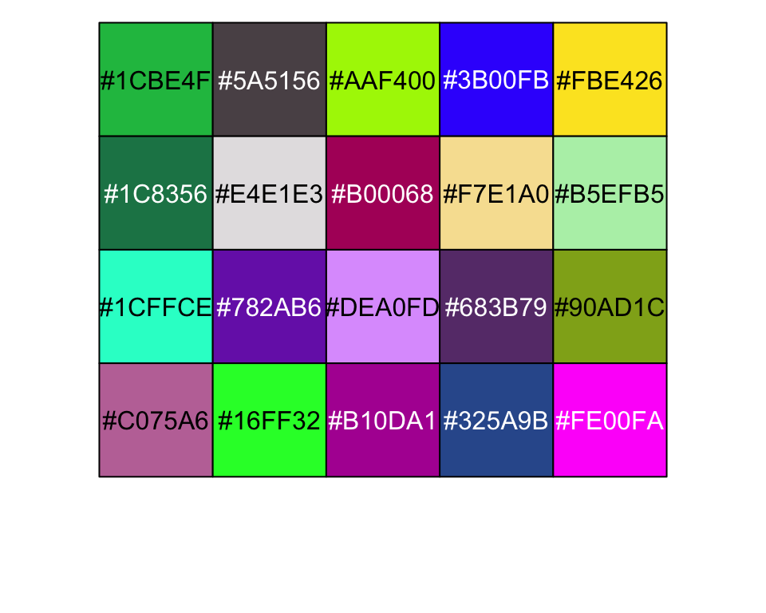

library(stRoke)
contrast_text(c("red","yellow","blue","green","purple", "orange","white","black"))[1] "white" "black" "white" "black" "white" "white" "black" "white"During my early use of R, I started to collect my own solutions to problems in an package. At some point I realised that most of the problems were already solved elsewhere and typically more elegantly. I took the best functions and moved them to a new project, the stRoke-package.(Damsbo 2023) This package have been used for learning and practising, but it has also been published to CRAN and I will keep including new functions in the package.
The main goal has been learning, but I also wanted to share my work for others to use or modify.
stRoke packageThe different functions have been documented in the package vignette. Here I will just discuss a few favourite examples.
The first example is just a small exercise in implementing ideas as a function.
Inspired by a discussion on StackOverflow and an example, I created a function to determine contrast levels. My use case was colouring text based on background colour, but the function can be used in many other cases as well.
Similar functionality is used in Polychrome::swatch() or scales::show_col(), but the function used for determining contrast here is a little crude. The contrast_text() is a little more sophisticated, and can be used on its own. Is it necessary? You’ll decide for yourself.
library(stRoke)
contrast_text(c("red","yellow","blue","green","purple", "orange","white","black"))[1] "white" "black" "white" "black" "white" "white" "black" "white"To give an example, I have modified the scales::show_col().
## Operator used by library(scales), but not exported
## Defined for convenience. It is a neat operator.
`%||%` <- function(a,b){
if (is.null(a)) b else a
}
## Modified color_plot() function
color_plot <-
function (colours,
labels = TRUE,
borders = NULL,
cex_label = 1,
ncol = NULL,
...)
{
n <- length(colours)
ncol <- ncol %||% ceiling(sqrt(length(colours)))
nrow <- ceiling(n / ncol)
colours <- c(colours, rep(NA, nrow * ncol - length(colours)))
colours <- matrix(colours, ncol = ncol, byrow = TRUE)
old <- par(pty = "s", mar = c(0, 0, 0, 0))
on.exit(par(old))
size <- max(dim(colours))
plot(
c(0, size),
c(0, -size),
type = "n",
xlab = "",
ylab = "",
axes = FALSE
)
rect(
col(colours) - 1,
-row(colours) + 1,
col(colours),
-row(colours),
col = colours,
border = borders
)
if (labels) {
label_col <- contrast_text(colours,...)
text(col(colours) - 0.5,
-row(colours) + 0.5,
colours,
cex = cex_label,
col = label_col)
}
}library(pals)
par(bg=NULL)named list()colors <- sample(pals::polychrome(),size = 20)
color_plot(colors,method="relative")
contrast_text()Writing this example, I found some ideas for colouring on this discussion thread.
I believe, that the analysis of mRS scores is a key discipline in clinical stroke research, as this measure of functional outcome has been a favourite for major stroke trials.
Overall, the mRS has been analysed in a dichotomised fashion with different cutoffs and using ordinal logistic regression. Most recently a new approach has gained some traction: “Tournament Methods”.(Churilov, Johns, and Turc, n.d.)
win_prob()This approach has been implemented in the genodds-package(Johns 2022), and based on the work by Zou, Zou, and Choi (2022), I have created the win_prob() function:
library(stRoke)
win_prob(
data = stRoke::talos,
response = "mrs_6",
group = "rtreat",
sample.size = FALSE,
print.tables = FALSE
) Zou et al's winP (doi: 10.1161/STROKEAHA.121.037744)
Probability of a random observation in Placebo group
will have a higher response score than a random
observation in Active group:
winP: 0.400 (0.612, 0.372) p=0.0125
--------------------------------------------
The numbers needed to treat (NNT) are: -9generic_stroke()The author of the genodds-package is also maintaining the rankinPlot-package, which makes it very easy to create the classic Grotta Bars visualising changes in mRS score distributions.(Johns 2023)
I have created the generic_stroke()-function to easily create table one, Grotta bars and binary or ordinal logistic regression plots with confidence intervals.
library(stRoke)
lst <- generic_stroke(df = talos,
"rtreat",
"mrs_6",
variables = c("hypertension", "diabetes", "civil"))
# names(lst)The first element in the function is a classical table 1 created using the great package gtsummary(Sjoberg et al. 2021) using tbl_summary():
library(gtsummary)
lst$`Table 1` |> as_gt()| Characteristic | Overall, N = 2001 | Active, N = 791 | Placebo, N = 1211 |
|---|---|---|---|
| hypertension | 101 (50%) | 38 (48%) | 63 (52%) |
| diabetes | 23 (12%) | 9 (11%) | 14 (12%) |
| civil | |||
| alone | 59 (30%) | 22 (28%) | 37 (31%) |
| partner | 141 (70%) | 57 (72%) | 84 (69%) |
| 1 n (%) | |||
The next element is a figure showcasing the grottaBar() function.
print(lst$`Figure 1`)
The function has been expanded lately to allow further customisation. The generic_stroke() uses the default implementation.
The last element is the only original part of the implementation. This is a horizontal forest plot of regression analysis values from the ci_plot() function, which plots model coefficients with confidence intervals based on a supplied model. Supports binary and ordinal logistic regression and other functions formatted in a similar way.
print(lst$`Figure 2`)The output is a ggplot-element and is highly modifiable.